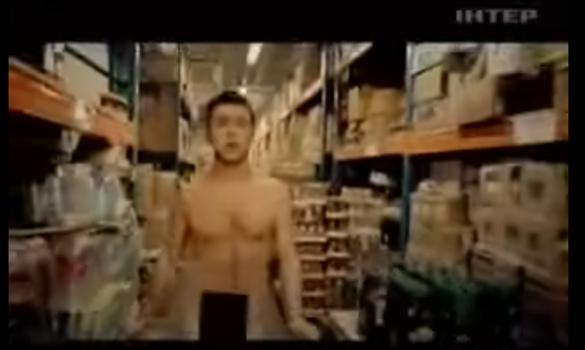
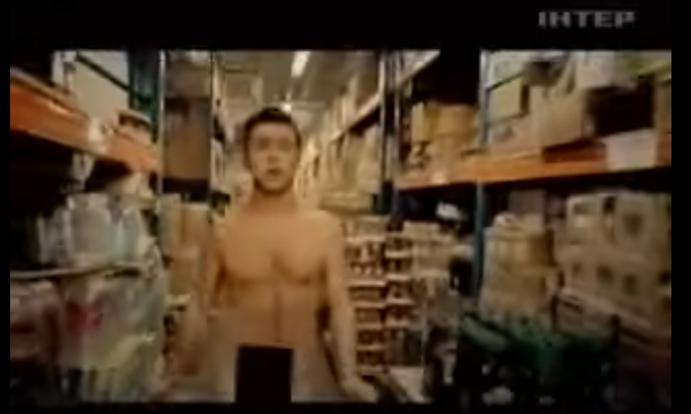
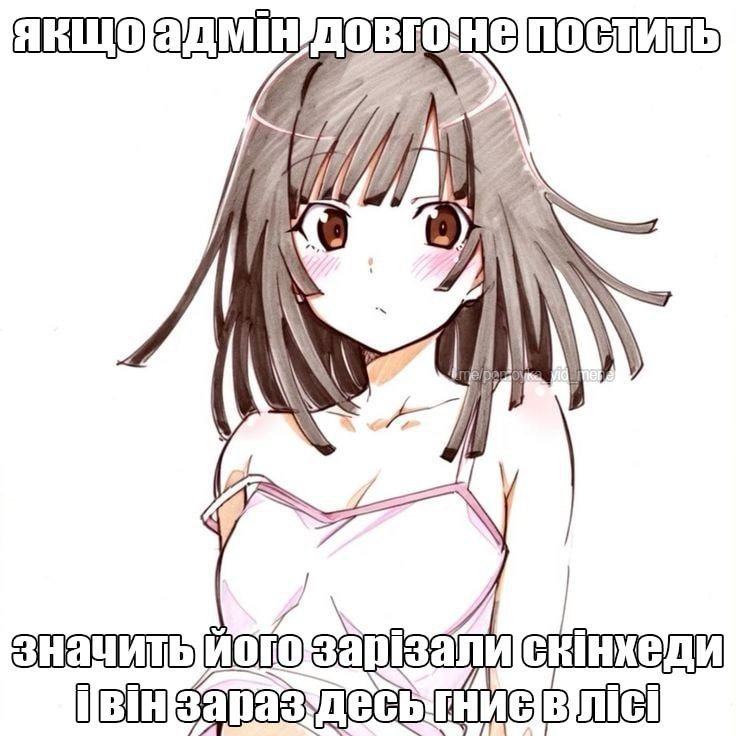
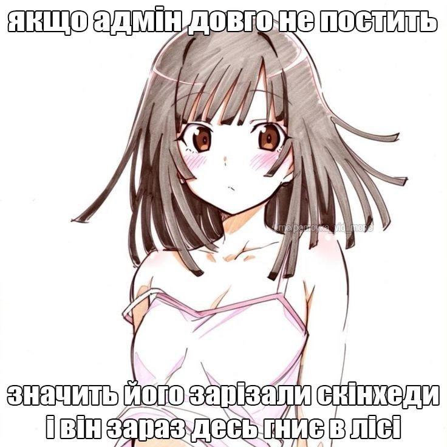
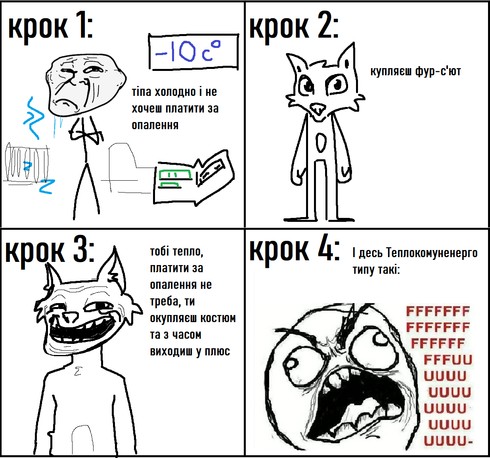

2024-11-3
Бля, так бісять голі баби у кліпах
Я недавно дивився Топ найпопулярніших пісень нульових у Європі, і типу там ця штука, що мене завжди бісила в величезній купі кліпів вже давно. Постійно з'являються якісь жінки у відвертому одязі\напівголі, роблять якісь квазі- або відверто сексуальні речі. Мене це натурально бісить, бо постійно така ситуація, що слухаєш пісню, вона тобі подобається, дивишся кліп, а там весь цей несмак. (От серйозно послухайте пісню "Oh Love" -- Green Day, уявіть як би виглядав кліп до цієї пісні абстрагуючись від мого тексту, і гляньте кліп). І серйозно найгірше коли ти дивишся кліп заради пісні, а твій екран бачить ще хтось і бачить цю всю хуйню.
І я не ханжа, я розумію, що секс, як і насильство, -- це один з інструментів у мистецтві, один з 'примітивних тригерів'. І точно не мені як аніматору та гравцю у відеоігри, тобто поціновувачу двох індустрій котрі довгі роки виборювали право показувати жорстокі та дорослі речі, казати що щось потрібно цензурувати, проте я за те щоб це не було якимось несмаком на рівні ютуб обкладинок з бідонами на пів екрана.
Наприклад пісня "Poison" з "Hazbin Hotel", там взагалі чоловіки єбуться на весь екран, але в цьому і суть, про це і пісня. Це цілком має сенс, виправдано тим що герой музикального номеру порно-актор не по своїй волі та показано креативно.
В кліпах Green Day на "Holiday" та "Jesus of Suburbia" також є непристойні образи, так, на пару з наркотиками, насильством та матом -- це підсилює атмосферу бруду та занепаду в кліпах на альбом "American Idiot". Я вважаю ці приклади правильним використанням сексуальних тем у кліпах на музику.
Взагалі серйозно кажучи, я не можу пригадати щоб чоловіків якось сексуалізували у музичних кліпах, типу мені на думку спадає кліп на пісню RHCP - "Californication" де члени гурту були без верхнього одягу, проте це взагалі незвабливо чи непристойно, на мою думку. Типу серйозно, якщоб чоловіків сексуалізували так само як і жінок у музиці то це виглядало б якось так.
Та й взагалі NNN на вулиці. Кріпчайте, мужі та сестри.
 =======

>>>>>>> 32a2fd6223cb66ac9bef7781c26814d8a5f46e0a
=======

>>>>>>> 32a2fd6223cb66ac9bef7781c26814d8a5f46e0a
2024-11-3
Ура, в мене з'явилась футболка з конями
На фото 100% certified horsegirl
І футболка з "Dan Vs" (та я шарю що налажали з розміром надпису, але що вже поробиш ¯\_(ツ)_/¯ )
2024-11-3
Нарешті подивився "Helluva Boss: Apology Tour"
Ну це прям жесть. Виявляється Вівьєн Медрано щось то вміє, лол!
Взагалі в мене така історія з Хелувою: Я весь час знав про нього, навіть міг на фон поставити якісь огляди, але не дивився. В 2023\2024 я вирішив все ж таки глянути, оскільки виходив "Hazbin Hotel". І, не знаю, можливо це провина серіалу, можливо це через те що я дивився залпом, але мені помірно сподобалось.Типу на 6.5\10.
Потім вийшов "Газбін", я люто зафанатів і став чекати на нові серії "Боса". Я застав "The Full Moon", абсолютно закохався у пісню "When I see him", і мене дуже глибоко зачепила проблематика стосунків Блітца та Столаса у цьому епізоді. Настільки, що змусила задуматись щодо відносин у моєму житті та сколихнула кілька ненайприємніших змін, але все ж, серіал став набагато більш інтимним для мене.
Вийшов "Apology Tour" коли я був у реальному турі, тож не подивився на виході і довго не міг знайти слушного моменту, до вчорашнього вечора.
Поки це -- напевно найкращий епізод "Helluva Boss". Він не роспилюється на купу підсюжетів, він не руйнує наратив заради жартів, він адекватно прописує драми -- тобто він не підпадає під всі претензії, що були до серіалу до того.
Сюжет -- це дуже чітка, визначена та завершена історія про те як Блітц намагається висловити свою любов до Столаса, хоча не може цього зробити, через те, що не вірить, що він на неї заслуговує, і тим самим відштовхує його. Серія починається з цього та цим і закінчується.
Всі діалоги та події рухають історію, в темпі, що не надто швидкий, проте і не надто повільний. Діалоги не тягнуться, і практично ніколи не йдуть в лоб, розмови між персонажами майстерно використовують підтекст.
Я б сказав в серії не має лишніх моментів, окрім фан-сервісного камео з вчителькою з першого епізоду. І також я б можливо вирізав момент де Блітц в злості проговорює свою мотивацію напряму уголос, це прям найгірший момент в епізоді, я не знаю навіщо вони його залишили.
І ще радше претензія до минулого епізоду, проте : Де Октевія? Нам ніби чітко показували, що вона більше любить батька, проте ми жодного разу не бачили її поряд з ним в цих двох епізодах (а могли замість тої непотрібної лінії з Херувимами)
Музика в епізоді шикарна, вона рухає сюжет, вона передає почуття персонажів, `Spindle Horse` не здають позиції як найкращий виробник мюзиклів на незалежній сцені анімації. Мені особливо сподобалась деталь, що виступ Столаса є дієгитичним для персонажів, і нам прямо, але не в лоб, передають внутрішній конфлікт Блітца через реакцію на слова "I don't think it meant to hurt me, 'cause I don't think it meant a thing at all". Також пісня Веросіки Мейхем "I'm Over You" на титрах, це просто неймовірне якесь почуття холодної, водночас .. ностальгічної? меланхолії.
Також я не можу передати словами наскільки ж кайфовий голос та акцент у Столаса, серйозно Брайс Пінкхем має янгольський голос.
Візуал також вище будь-яких похвал, насправді порівнюючи з "Hazbin Hotel" в деяких моментах таке враження, що саме "Пекельна Хоругва" -- це шоу створене на гроші Amazon, а не на пожертви з Patreon`у. Тобто анімацію тут goes hard. Детальна, виразна, пропрацьована, якісна і ще безліч найращих прикметників.
Особливо хочу похвалити Композ, особливо в сценах на вечірці: всі ці градієнти на тканині, м'ягке світло, світіння очей, я не дуже шарю за цю частину створення анімації, але впевнений, що людина, що це робила постаралась на славу.
Єдине що у Столаса на 4:30 зникає на один кадр покрас в одному з листочків на його халаті (Boy, I really hope somebody got fired for that blunder)
Загалом, якщо говорити про найголовніше в кіно, то емоції ця серія викликає як ніяка інша. Особливо діалог між п'яним Столасом та Блітцом на вечірці. Це прямо момент коли зазвичай закритий у собі та мовчазний принц говорить все що хотів, без притаманної йому лаконічності, і дуже добре показанна Імпова нездатність артикулювати свої почуття через внутряшні комплекси, які за іронією долі і є тим через що вони зійшлись, проте що і не може дати їм бути щасливими. Діалог з Веросікою та кінцівка також б'ють під дих.
2024-11-3
 =======

>>>>>>> 32a2fd6223cb66ac9bef7781c26814d8a5f46e0a
=======

>>>>>>> 32a2fd6223cb66ac9bef7781c26814d8a5f46e0a
2024-10-7
Ідея, яка прийшла мені одного ранку
Я думаю ви повільно починаєте розуміти чому я обмежив собі доступ в соцмережі.
2024-10-2
Завершив Disco Elysium
Це прямо одна з ігор, які мене дуже вразили за останній час. Я дуже радий, що допройшов її і що, якимось чином, зміг не зловити спойлери, щодо кінцівки. Я розумію наскільки це пошле порівняння, але це прямо як дуже добре написана книжка.
Персонажі, атмосфера, арт-дайрекшн, історія в купі створюють таке дивне, ефимерне почуття меланхолії, з якою вживаєшся настільки, що вона вже стає тобі рідною, та теплою в якісь мірі. Це прям відчутно пост-радянська гра. Особливо коли я почув історію острову, то в мене виникла думка: "Ха-ха, та я ж тут живу".
Загалом політичний аспект гри також цікавий, я не думаю, що маю достатню кількість знань, щоб дати якусь експертну думку, щодо цього, проте в грі активно досліджуються та водночас висміюються всі можливі ідеології. Впродовж сюжету ти спостерігаєш за бридкими сторонами усіх систем: нерівності капіталізму, нерішучості центризму, ненависті фашизму та невігластва комунізму. Це неймовірно доповнює атмосферу безвиході, що гра намагається передати.
Геймплей - 10 ударів по дітям з 10. Типу реально, в тебе дуже багато можливостей, дуже багато варіантів розвитку подій, дуже цікаво досліджувати світ. Особливо система думок, це прям офігенний задум.
Кста мова в грі дуже вишукана, якщо англійська не ваша рідна мова, що я підозрюю так, якщо ви це читаєте, то відсотків 10 геймплею - це пошук визначення в словниках (Cambridge Dictionary показує, що я додав 263 слова в список Disco Elysium під час проходження). Але це, трясця, того коштує, я ніколи не читав нічого настільки художнього, при тому не графоманського.
Я не знаю як ще облизати художній стиль DE, ви напевно і так про нього чули, просто скажу: Алєксандр Ростов - геній.
Музика також дуже крута, особливо тема Whirling in Rags. В певний момент часу, я включав її кожного ранку на циклі поки снідав і пив каву.
(*Внизу спойлер кінцівки*)
Кінцівка дуже дивна. Впродовж гри я спершу думав, що Гарі виявиться вбивцею, потім, що можливо в цьому замішана Pale (я хз "сірість", "блідість"), І що можливо це щось по типу часово циклу, можливо, що це було самогубство Лелі. Але ні. Це просто старий комунар, який просто сидів далеко на острові, без будь-якої особливої причини вбивши цього чєла, що і запустило події гри. І з Гарі не сталось нічого особливого поганого на початку гри, він бухав через шлюб, який розвалився 6 років назад. Це дивно, але ця анти-кулмінаційність гри, хоча спантеличує спершу, проте доповнює атмосферу і почуття гри так сильно, що навіть тяжко описати.
Цілісність -- я думаю ідеальне слово для опису Disco Elysium, в цій грі все працює на почуття, які гра хоче передати від ігрових механік до історії, і їй це, чорт забирай, вдається.
(V V V єдине чого не вистачало грі до повної цілісності V V V)
2024-09-12
"Through many dark hours I've been thinking about this"
Блін, назвіть мені інструмент більш гейський, ніж скрипка. Тобто серйозно існує інструмент де ти натираєш продовгувату палку гумоподібною речовиною, і після цього дьоргаєш цим з сторони в сторону і ніхто нічого в цьому не бачить?...
Обожнюю скрипки, зразу після піаніно та гітари мій улюблений інструмент.
2024-08-27
LOL
axaxaxaxxa
2024-08-27
LOL
axaxaxaxxa